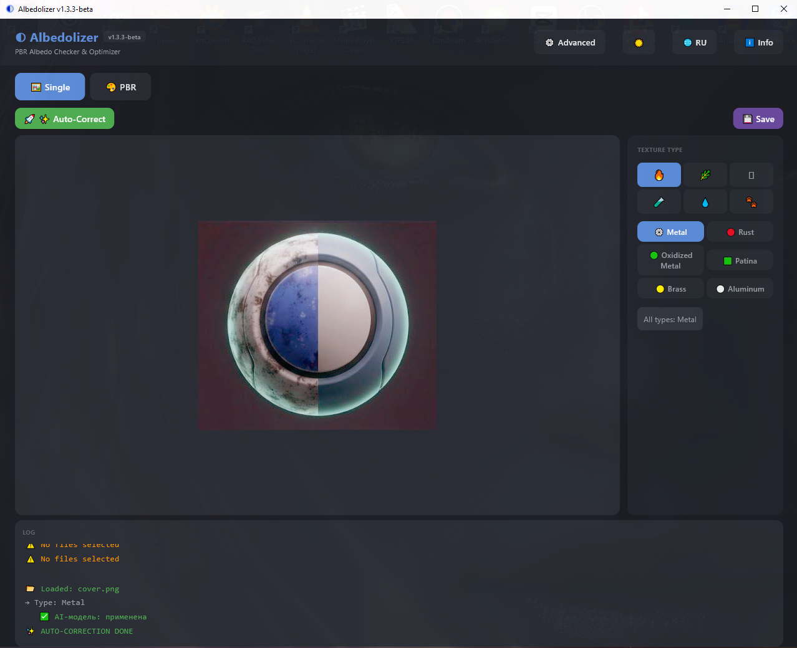
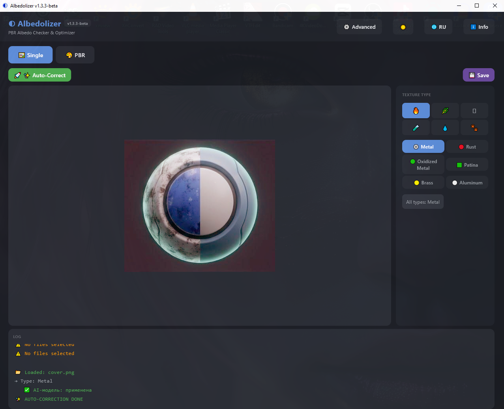
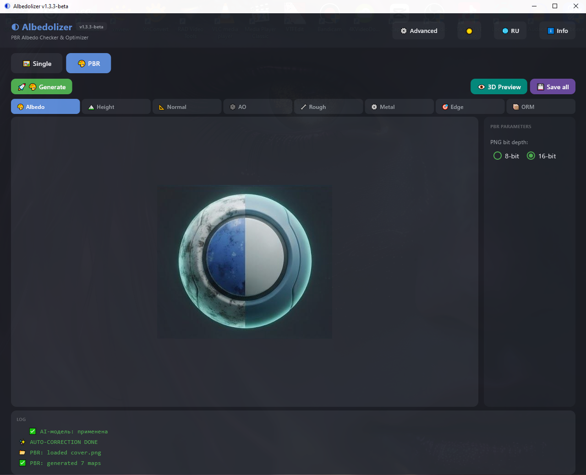
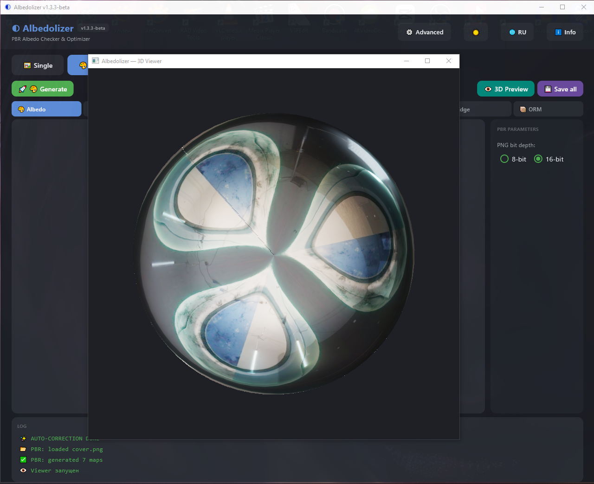
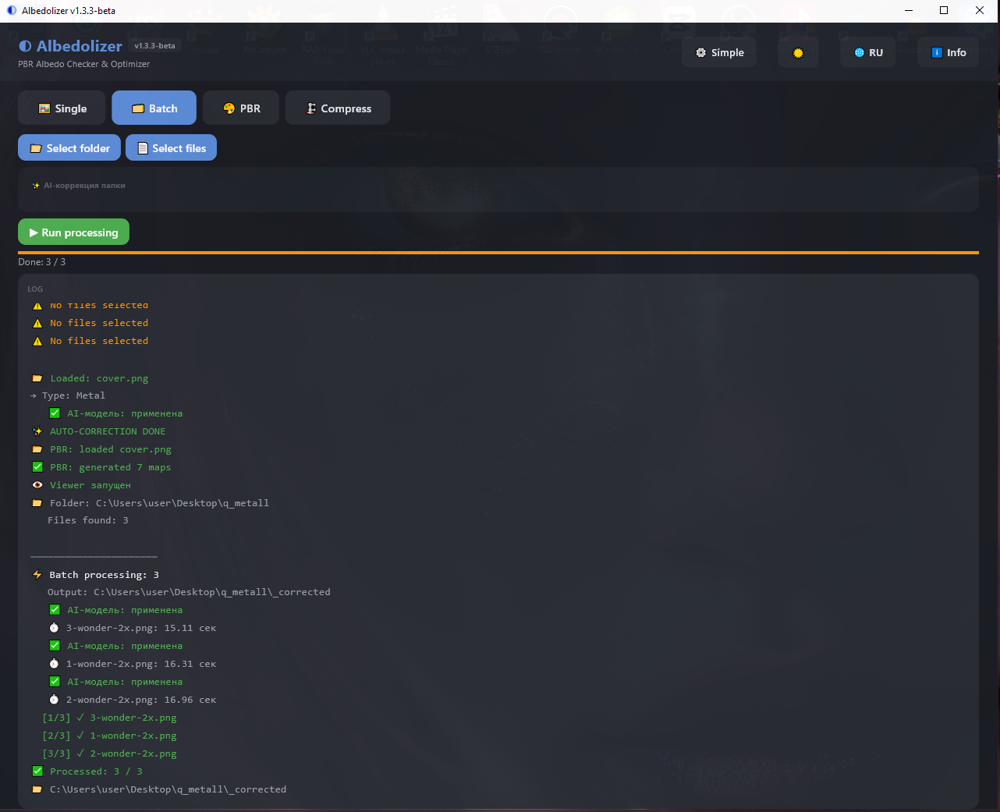
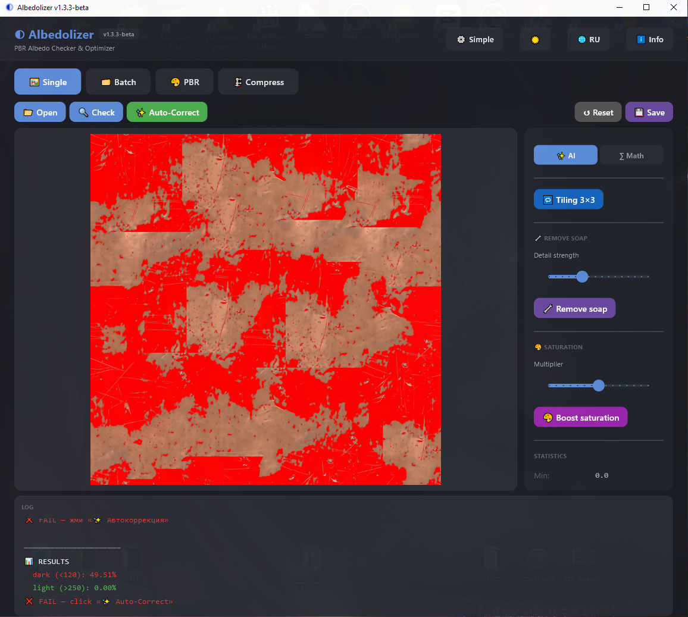

Проверяй, чини и генерируй PBR-текстуры Check, fix, and generate PBR textures
Бесплатный инструмент для 3D-художников: анализ Albedo, AI-коррекция цвета, 7 PBR-карт и 3D-вьюер — всё в одном окне. Free tool for 3D artists: Albedo analysis, AI color correction, 7 PBR maps, and a 3D viewer — all in one window.

Анализ AlbedoAlbedo Analysis
Heatmap проблемных зон + статистика: min / max / avg / median / перцентили.Heatmap of problem zones + stats: min / max / avg / median / percentiles.
AI-коррекция цветаAI Color Correction
Autolevels XCiT + Math-fallback (CLAHE). Плюс фикс «мыла» и насыщенности.Autolevels XCiT + Math fallback (CLAHE). Plus soap removal and saturation boost.
7 PBR-карт7 PBR Maps
Height, Normal, AO, Roughness, Metallic, ORM, Edge. 8 или 16 bit.Height, Normal, AO, Roughness, Metallic, ORM, Edge. 8 or 16 bit.
Встроенный 3D-вьюерBuilt-in 3D Viewer
OpenGL-превью PBR в реальном времени. Вращение, зум, HDRI-освещение.Real-time OpenGL PBR preview. Rotate, zoom, HDRI lighting.
37 пресетов37 Presets
6 категорий: металл, природа, минерал, синтетика, спецэффекты, фауна.6 categories: metal, nature, mineral, synthetic, special, fauna.
Пакетная обработкаBatch Processing
AI-коррекция или сжатие целых папок с прогресс-баром.AI correction or compression for whole folders with progress bar.
Скачать AlbedolizerDownload Albedolizer
Версия 1.6.0-beta для Windows. Установщик сделает всё сам — ярлыки, меню Пуск, удаление. Version 1.6.0-beta for Windows. Installer handles everything — shortcuts, Start Menu, uninstaller.
Windows 10/11, 64-bit · MIT License · Бесплатно Windows 10/11, 64-bit · MIT License · Free
📖 Мануал📖 Manual
Полное руководство по всем вкладкам и инструментамFull guide to all tabs and tools
1. Быстрый старт1. Quick Start
Simple режим — три шага:
Simple mode — three steps:
- Выбери тип текстуры справаPick texture type on the right
- Нажми
✨ Auto-CorrectClick✨ Auto-Correct - Нажми
💾 SaveClick💾 Save

- Хедер — лого, версия, кнопки: Simple/Advanced, тема, язык, инфоHeader — logo, version, buttons: Simple/Advanced, theme, language, info
- Auto-Correct — главная кнопкаAuto-Correct — main button
- Превью — текстура и heatmapPreview — texture and heatmap
- Тип текстуры — категории и пресетыTexture type — categories and presets
- Лог — что происходитLog — what's happening
Как выбрать тип текстурыHow to pick texture type

- Категории — 6 групп: 🔥 Металл, 🌿 Природа, 🪨 Минерал, 🧪 Синтетика, 💧 Спецэффекты, 🐾 ФаунаCategories — 6 groups: 🔥 Metal, 🌿 Nature, 🪨 Mineral, 🧪 Synthetic, 💧 Special, 🐾 Fauna
- Пресеты — конкретные материалы внутри категорииPresets — specific materials inside category
Как открыть Advanced режимHow to open Advanced mode

- Кнопка ⚙ Advanced в хедере — тыкни, чтобы открыть все инструменты⚙ Advanced button in header — click to unlock all tools
2. Одиночная обработка (Advanced)2. Single Processing (Advanced)
Simple делает всё одной кнопкой. Advanced даёт полный контроль.
Simple does everything in one click. Advanced gives full control.
- Open / Check / Auto-Correct / Reset / Save — отдельные кнопкиOpen / Check / Auto-Correct / Reset / Save — separate buttons
- Правая панель — все настройкиRight panel — all settings
- Correction mode —
AIилиMathCorrection mode —AIorMath - Tiling 3×3 — проверка бесшовностиTiling 3×3 — seamless check
3. PBR + 3D Viewer3. PBR + 3D Viewer
Во вкладке PBR — 7 карт из одного Albedo + просмотр в 3D-вьюере.
In the PBR tab — 7 maps from one Albedo + 3D viewer preview.

- 🎨 Generate — сгенерировать карты🎨 Generate — generate maps
- Кнопки карт — Albedo / Height / Normal / AO / Rough / Metal / Edge / ORMMap buttons — Albedo / Height / Normal / AO / Rough / Metal / Edge / ORM
- 👁 3D Preview — открыть 3D-вьюер👁 3D Preview — open 3D viewer
- 💾 Save all — сохранить все 7 карт💾 Save all — save all 7 maps
- PNG bit depth — 8-bit или 16-bitPNG bit depth — 8-bit or 16-bit
3D Viewer — управление3D Viewer — controls

- ЛКМ + движение — вращение камерыLMB + drag — rotate camera
- Колесо мыши — зумMouse wheel — zoom
- Esc — закрытьEsc — close
4. Пакетная обработка4. Batch Processing
Вкладка Batch. Обрабатывает целую папку одним запуском.
The Batch tab. Processes a whole folder in one run.

- Select folder / files — выбери папку или файлыSelect folder / files — pick folder or files
- Run processing — запускRun processing — start
- Лог — по каждому файлу время и статус. Результат в папке
_correctedLog — time and status per file. Output to_corrected
5. Сжатие5. Compression
Вкладка Compress. Сжимает Albedo через LAB-преобразование.
The Compress tab. Compresses Albedo via LAB roundtrip.

- Одиночное сжатие — секция сверху. Обрабатывает один файлSingle compression — top section. Processes one file
- Открыть / Сжать — выбери файл и сожмиOpen / Compress — pick file and compress
- Сохранить — сохранить результатSave — save result
- Пакетное сжатие — секция ниже. Целая папка. Результат в
_compressedBatch compression — bottom section. Whole folder. Output to_compressed
6. Advanced — что внутри6. Advanced — what's inside
Advanced открывает все инструменты. Тоггл — кнопка ⚙ Advanced / ⚙ Simple в хедере.
Advanced unlocks all tools. Toggle — the ⚙ Advanced / ⚙ Simple button in the header.

- Режим коррекции —
AIилиMath. AI качественнее, Math быстрее.Correction mode —AIorMath. AI is better, Math is faster. - Tiling 3×3 — раскладывает текстуру в сетку 3×3 для проверки бесшовности.Tiling 3×3 — tiles texture into 3×3 grid for seamless check.
- Remove soap — убирает «мыльные» размытые участки после AI.Remove soap — removes blurry patches after AI.
- Boost saturation — поднимает насыщенность. Множитель 0.8–1.5.Boost saturation — boosts saturation. Multiplier 0.8–1.5.
- Statistics — Min/Max/Avg/Median/1%/99% яркости.Statistics — Min/Max/Avg/Median/1%/99% luminance.